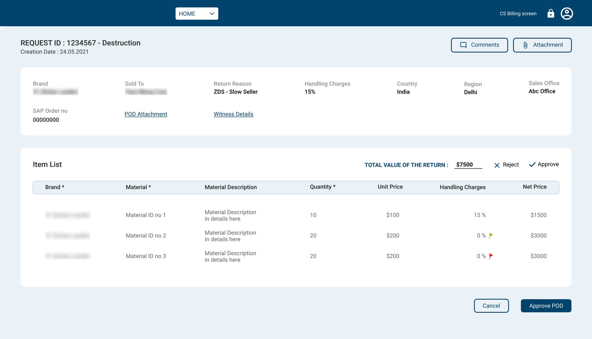
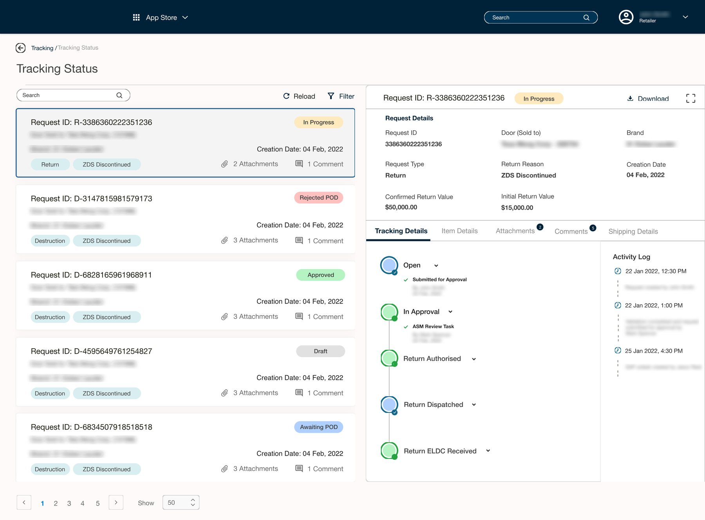

Estée Lauder Companies / Incture Client · Travel Retail · Returns and Destruction · 07/11
ESTÉE LAUDERProof Before Credit.
- Role
- Lead designer and the client's single point of contact for design. A designer on my team built the screens
- Context
- Estée Lauder Companies, through Incture Technologies
- Apps
- Destruction in field (DIF) and returns (RAF)
- Platform
- Web
PRODUCT THAT CAN'T GO BACK ON THE SHELF.
ELC sells through travel retail: airport and duty-free stores around the world. When stock is discontinued, damaged or past its date, a retailer either returns it or destroys it on site. Destroying it in the field needs proof, and every request needs approval before the retailer gets credit.
Three groups take part in each request. The retailer raises it. ELC's account and sales managers (CAM and ASM) approve it. Customer service (CS) checks it and releases it for billing.
I was the design lead and the client's single point of contact for design on this project.
The Problem
One request passes through three groups, several approval levels and a proof step, and each group needs to know exactly where it stands.
Screen: A new destruction request

Destruction or return
One form, with the type chosen at the top.
Many items at once
A template can be downloaded and uploaded instead of typing each line.
Attachments before submit
The form says an attachment must be added before it can be submitted.
FOUR DECISIONS THAT SHAPED THE APPS.
Decision 01
One Launch Pad per Role
Each role gets its own launch pad and landing page: the retailer, CAM and ASM, and CS. The retailer starts from "Create and track your request here." CAM, ASM and CS start from what is waiting for them.
The same request looks different to each of them, because each of them has a different job to do with it.
Screen: The CAM and ASM landing page

Counts by stage
Draft, in progress, awaiting POD, credit note issued and rejected.
Status on every request
Each line shows where the request is, with its own color.
DIF and RAF together
Destruction and return requests in one list, marked by type.
Decision 02
Proof Before Credit
A destruction request isn't done when it's approved. The retailer then submits proof of destruction (POD), and the POD goes through its own review before CS releases the request for billing.
So the screens show each stage on its own: request approved, POD submitted, POD under review, POD approved, released for billing. Each one has its own confirmation, such as "Are you sure you want to Release for Billing," so nobody moves a request forward by accident.
Screen: Customer service reviews the proof of destruction

The proof one click away
POD attachment and witness details sit with the request details.
The items being credited
Each line with its quantity, unit price, handling charges and net price.
Its own approval
Approve POD is a separate step from approving the request.
Decision 03
Approve Part of a Request
A request can hold many items. An approver can approve some and reject others, and the request is marked as partially approved. A reason popup asks why.
When items are rejected, the retailer gets an email that says which request it was and asks them to update it with valid materials or quantities and resubmit. So a rejection always comes with the next step.
Screen: ASM approval, item by item

A decision per line
Each item has its own reject and approve controls.
A comment per line
The reason sits on the item it is about.
Approve or reject all
The same actions for the whole list sit above it.
Decision 04
Build on What ELC Already Had
The file keeps screenshots of ELC's existing application, and the admin screens follow the design ELC already used. Retailers and ELC teams were moving to new apps, and the parts they already knew stayed familiar.
Admins manage the static data and the email templates behind each notification.
WORKING FILE TO APPROVED DESIGNS.
The designs went through a working file, a set of approved designs and a finalized launch pad dated 26 February 2022. The DIF and RAF screens sit on separate pages, with the admin screens and the work box (task inbox) screens alongside.
The same team also designed other ELC apps in this period: order approvals for blocked sales orders, markdown requests, park and post, and procure to pay, under ELC's Digital One Finance, and a set of analytics dashboards on returns by retailer.
Screen: Tracking a request

Every request and its status
In progress, rejected POD, approved, draft and awaiting POD, in one list.
The steps it went through
Open, in approval, return authorized, dispatched and received.
Who did what, when
An activity log with the date and time of each step.
WHAT WAS DESIGNED.
2
Apps: destruction in field and returns.
3
Groups with their own launch pad: retailer, CAM and ASM, and customer service.
1
Proof step between approval and billing, with its own review.
This page reports scope, not measured results.